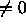
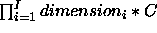
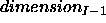
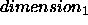
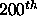
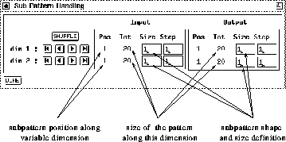
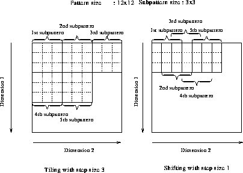

Variable patterns are much more difficult to define and handle. Example applications for variable pattern set include TDNN patterns for one variable dimension and picture processing for two variable dimensions. The SNNS pattern definition is very flexible and allows a great degree of freedom. Unfortunately this also renders the writing of correct pattern files more difficult and promotes mistakes.
To make the user acquainted with the pattern file format we describe the format with the help of an example pattern file. The beginning of the pattern file describing a bitmap picture is given below. For easier reference, line numbers have been added on the left.
0001 SNNS pattern definition file V3.2
0002 generated at Fri Aug 3 00:00:44 1999
0003
0004 No. of patterns : 10
0005 No. of input units : 1
0006 No. of output units : 1
0007 No. of variable input dimensions : 2
0008 Maximum input dimensions : [ 200 200 ]
0009 No. of variable output dimensions : 2
0010 Maximum output dimensions : [ 200 200 ]
0011
0012 # Input pattern 1: pic1
0013 [ 200 190 ]
0014 1 1 1 0 1 1 1 1 1 1 0 0 0 0 1 1 1 1 1 1 1 1 1 0 1 1 0 0 1 1 0 1
.
.
.
0214 1 1 1 0 1 1 1 1 1 1 0 0 0 0 1 1 1 1 1 1 1 1 1 0 1 1 0 0 1 1 0 1
0215 # Output pattern 1: pic1
0216 [ 200 190 ]
0217 1 1 1 0 1 1 1 1 1 1 0 0 0 0 1 1 1 1 1 1 1 1 1 0 1 1 0 0 1 1 0 1
.
.
.
Some of the comments identifying parameter names make no sense when the file describes a variable pattern. They are kept, however, for reasons of compatibility with the regular fixed size pattern definitions.
The meaning of the various lines is:
Note: The lines 0007 and 0008 are pairwise mandatory, i.e. if one is given, the other has to be specified as well. Old pattern files do have neither one and can therefore still be read correctly.
Note: The lines 0009 and 0010 are again pairwise mandatory, i.e. if one is given, the other has to be specified as well. Old pattern files do have neither one and can therefore still be read correctly.

. It specifies the size of the following input pattern and is given as a list of integers separated by blanks and enclosed in [ ]. The values have to be given by descending dimensions row, i.e. [ dimension_3 dimension_2 dimension_1 ] (here: [200 190]). Note that [200 190] is less than the maximum, which is specified in line 0008.

activation values (i.e. here 1*190 = 190 integer values). The values are expected to be stored as:
times
times
 activation values (i.e. here the
activation values (i.e. here the 
line)
Once the patterns are loaded into the simulator, their handling can be
controlled by using the control panel. For the handling of variable size
patterns an additional subpattern panel is provided. The handling of
patterns is described in conjunction with the control panel description
in section  . All these explanations are intended for
fixed sized patterns, but also hold true for variable size patterns
so they are not repeated here.
. All these explanations are intended for
fixed sized patterns, but also hold true for variable size patterns
so they are not repeated here.
The additional functionality necessary for dealing with variable size
patterns is provided by the subpat panel depicted in figure
 .
.

4pt plus 2pt minus 4pt
A subpattern is defined as the number of input and output activations that match the number of input and output units of the network. The size and shape of the subpattern must be defined in the subpat panel.
Note: A correct subpattern must be defined before any learning, propagation or recall function can be executed.
Note: For a network with 30 input units input subpatterns of size 1x30, 2x15, 3x10, 5x6, 6x5, 10x3, 2x15, and 30x1 would all be valid and would be propagated correctly if C = 1. Is the position of the various input units important, however, (as in pictures) both size and shape have to match the network. Shape is not checked automatically, but has to be taken care of by the user! In the case of a color picture, where each pixel is represented by three values (RGB) C would be set to three and the set of possible combinations would shrink to 1x10, 2x5, 5x2, and 10x1.
Note: When loading a new pattern set, the list of activations is assigned to the units in order of ascending unit number. The user is responsible for the correct positioning of the units. When creating and deleting units their order is easily mixed up. This leads to unwanted graphical representations and the impression of the patterns being wrong. To avoid this behavior always make sure to have the lowest unit number in the upper left corner and the highest in the lower right. To avoid these problems use BIGNET for network creation.
Once a subpattern is defined, the user can scroll through the pattern along every dimension using the buttons xgui_figs/xgui_button_first.ps, xgui_figs/xgui_button_prev.ps, xgui_figs/xgui_button_next.ps, and xgui_figs/xgui_button_last.ps. The step size used for scrolling when pressing the buttons xgui_figs/xgui_button_prev.ps and xgui_figs/xgui_button_next.ps is determined by the input and output step fields for the various dimensions. The user can still as well browse through the pattern set using the arrow buttons of the control panel.
It is possible to load various pattern sets with a varying number of variable dimensions. The user is free to use any of them with the same network alternatively. When switching between these pattern sets the subpattern panel will automatically adapt to show the correct number of variable dimensions.
When stepping through the subpatterns, in learning, testing, or simply displaying, the resulting behavior is always governed by the input pattern. If the last possible subpattern within the current pattern is reached, the request for the next subpattern will automatically yield the first subpattern of the next pattern in both input and output layer. Therefore it is not possible to handle all subpatterns for training when there are not the same number of subpatterns in input and output layer available. By adjusting the step width accordingly, it should always be possible to achieve correct network behavior.

20pt plus 2pt minus 4pt
The last possible subpattern in the above description is dependent
from the settings of the subpattern panel. An example for a
one-dimensional case would be: In a pattern of size 22 is the last
subpattern with size = 3 and step = 5 the position 15. Changing the
step width to 2 would lead to a last position of 18.
In figure  , the left pattern would have only 9
subpatterns, whereas the right one would have 49 !
, the left pattern would have only 9
subpatterns, whereas the right one would have 49 !
The next reachable position with the current step width will always be a multiple of this step width. That is, if the step width is 4 and pattern position 8 is reached, a change of step width to 5 and a subsequent press of xgui_figs/xgui_button_next.ps would result in position 10 (and not 13 as some might expect).
When selecting a step width, the user also has to remember whether the pattern should be divided in tiles or overlapping pieces. When implementing filter e.g., whether picture or others, a tiling stile will always be more appropriate, since different units are treated not concordantly.
It is the sole responsibility of the user to define the step width and
the size of the subpattern correctly for both input and output. The
user has to take care for the subpatterns to be correspondent. A wrong
specification can lead to unpredictable learning behavior. The best
way to check the settings is to press the  button, since
exactly those subpatterns are thereby generated that will also be used
for the training. By observing the reported position in the subpattern
panel it can be verified whether meaningful
values have been specified.
button, since
exactly those subpatterns are thereby generated that will also be used
for the training. By observing the reported position in the subpattern
panel it can be verified whether meaningful
values have been specified.